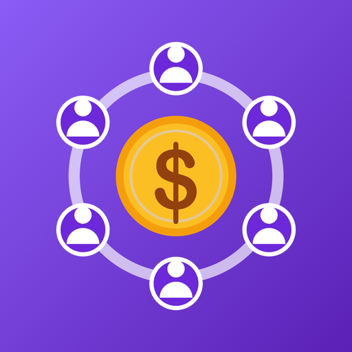

Política de privacidad
Mis Tandas
Última actualización: 23 de octubre de 2026
Esta política explica qué información maneja la aplicación para Android Mis Tandas (la “App”), desarrollada por Oscar Ramírez (RamzLabs), Guadalajara, Jalisco, México (el “Desarrollador”), y cómo se utiliza.
- La información de tus tandas, participantes y aportaciones se guarda solo en tu teléfono. El Desarrollador no la recibe ni la puede ver.
- La App no requiere crear una cuenta.
- La App muestra anuncios de Google AdMob, que recopila ciertos datos del dispositivo (como el ID de publicidad) para mostrar y medir anuncios.
1. Información que tú capturas
Para funcionar, la App te permite registrar:
- Tandas: nombre, monto de la aportación, frecuencia, fechas y notas.
- Participantes: nombre, teléfono y turno.
- Aportaciones y entregas: qué participante pagó en cada ronda, cuándo, y a quién se le entregó el pozo.
Esta información se almacena en una base de datos local dentro de tu dispositivo. No se envía a servidores del Desarrollador ni a terceros, y no se usa para publicidad.
Eres responsable de contar con la autorización de los participantes para registrar sus datos personales y de usarlos conforme a la legislación aplicable, incluida la Ley Federal de Protección de Datos Personales en Posesión de los Particulares.
2. Publicidad (Google AdMob)
La App usa Google AdMob para mostrar anuncios. El SDK de Google Mobile Ads puede recopilar y procesar automáticamente:
- El ID de publicidad de Android.
- La dirección IP y la ubicación aproximada derivada de ella.
- Información del dispositivo y del sistema (modelo, versión de Android, idioma).
- Interacciones con los anuncios y datos de diagnóstico y rendimiento.
Google usa estos datos para mostrar anuncios, medir su rendimiento, prevenir fraudes y, cuando lo permites, personalizar la publicidad. Más información:
Los datos de tandas, participantes y aportaciones que capturas no se comparten con Google ni con anunciantes.
3. Consentimiento y control de los anuncios
- Si te encuentras en el Espacio Económico Europeo, el Reino Unido o Suiza, la App te pedirá tu consentimiento antes de usar tus datos para anuncios personalizados. Puedes cambiar tu elección en cualquier momento desde Inicio → menú (⋮) → Privacidad de anuncios.
- En cualquier país puedes restablecer o eliminar tu ID de publicidad, o desactivar la personalización de anuncios, en Ajustes de Android → Google → Anuncios (o Ajustes → Seguridad y privacidad → Otros ajustes de privacidad → Anuncios).
4. Permisos de la App
- Internet y estado de la red: para cargar anuncios.
- ID de publicidad: lo usa AdMob según lo descrito arriba.
Cuando tocas “Llamar” o “WhatsApp”, la App abre el marcador o WhatsApp con el número del participante y un recordatorio ya escrito; el mensaje solo se envía si tú lo mandas desde esa aplicación. Al tocar “Compartir calendario”, la App abre el menú para compartir de Android con el texto del calendario; tú eliges con quién compartirlo. La App no lee tus contactos, llamadas ni mensajes.
5. Conservación y eliminación de datos
Los datos que capturas permanecen en tu dispositivo hasta que los eliminas desde la App (tandas, participantes o aportaciones) o hasta que desinstalas la App o borras sus datos desde los ajustes de Android. Como el Desarrollador no guarda copias, no puede recuperarlos si se pierden. Para los datos que trata Google, consulta la política de Google.
6. Seguridad
La información se guarda en el almacenamiento privado de la App, al que otras aplicaciones no pueden acceder. Te recomendamos proteger tu teléfono con bloqueo de pantalla.
7. Menores de edad
La App es una herramienta para organizar tandas dirigida a adultos y no está diseñada para menores de 13 años. No recopilamos de forma intencional información de menores.
8. Cambios a esta política
Podemos actualizar esta política. Publicaremos la versión vigente en esta misma página con su fecha de actualización.
9. Contacto
Si tienes preguntas sobre esta política o sobre tus datos, escribe a oscarivanramirezruiz96@gmail.com.